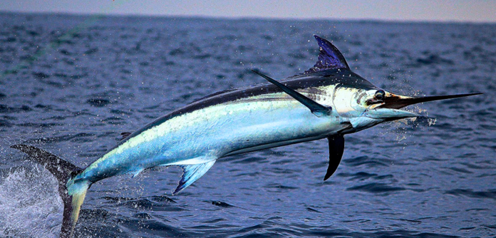

This is a site about fish
Swordfish

Swordfish , also known as broadbills in some countries, are large, highly migratory, predatory fish characterized by a long, flat bill.
They are a popular sport fish of the billfish category, though elusive. Swordfish are elongated, round-bodied, and lose all teeth and scales by adulthood.
These fish are found widely in tropical and temperate parts of the Atlantic, Pacific, and Indian Oceans, and can typically be found from near the surface to a depth of 550 m (1,800 ft).
They commonly reach 3 m (9.8 ft) in length, and the maximum reported is 4.55 m (14.9 ft) in length and 650 kg (1,430 lb) in weight.
They commonly reach 3 m (9.8 ft) in length, and the maximum reported is 4.55 m (14.9 ft) in length and 650 kg (1,430 lb) in weight. The International Game Fish Association's all-tackle angling record for a swordfish was a 536 kg (1,182 lb) specimen taken off Chile in 1953.
Females are larger than males, and Pacific swordfish reach a greater size than northwest Atlantic and Mediterranean swordfish.
They reach maturity at 4–5 years of age and the maximum age is believed to be at least 9 years. The oldest swordfish found in a recent study were a 16-year-old female and 12-year-old male.
Swordfish ages are derived, with difficulty, from annual rings on fin rays rather than otoliths, since their otoliths are small in size.
Swordfish are ectothermic animals; however, along with some species of sharks, they have special organs next to their eyes to heat their eyes and brains.
Temperatures of 10 to 15 °C (18 to 27 °F) above the surrounding water temperature have been measured.
The heating of the eyes greatly improves their vision, and consequently improves their ability to catch prey.Of the 25,000+ fish species, only 22 are known to have a mechanism to conserve heat.
These include the swordfish, marlin, tuna, and some sharks
Contrary to popular belief, the "sword" is not used to spear, but instead may be used to slash at its prey to injure the prey animal, to make for an easier catch.
Mainly, the swordfish relies on its great speed and agility in the water to catch its prey. It is undoubtedly among the fastest fish, but the basis for the frequently quoted speed of 97 km/h (60 mph) is unreliable
Swordfish feed daily, most often at night, when they rise to surface and near-surface waters in search of smaller fish.
During the day, they commonly occur to depths of 550 m (1,800 ft) and have exceptionally been recorded as deep as 2,878 m (9,442 ft).
Adults feed on a wide range of pelagic fish, such as mackerel, barracudinas, silver hake, rockfish, herring, and lanternfishes, but they also take demersal fish, squid, and crustaceans.
In the northwestern Atlantic, a survey based on the stomach content of 168 individuals found 82% had eaten squid and 53% had eaten fish, including gadids, scombrids, butterfish, bluefish, and sand lance.
Large prey are typically slashed with the sword, while small are swallowed whole.
Fastest fish
Some of the fastest fish of the ocean are the:Wahoo,Striped marlin and the Sailfish.
Orange clownfish

The orange clownfish is widely known as a popular aquarium fish.Like other clownfishes it often lives in association with sea anemones.
and as larvae use chemical cues released from the anemones to identify and locate the appropriate host species to use them for shelter and protection.
This causes preferential selection when finding their anemone host species. Although popular, maintaining this species in captivity is rather complex.
Amphiron percula can grow to be 11 cm (4.3 in) in length, but is on average 8 cm (3.1 in), and can be recognized by three white lines across their bright orange bodies, with no distinction in color between sexes.
The anterior white bar is placed just behind the eye, the middle bar goes straight down the middle of the fish, and the posterior bar occurs near the caudal fin.
An anterior projecting bulge also exists on the middle bar. In addition to the white coloring, black edging outlines each fin with varying thickness.
This species can be mistaken for the similar species of clownfishes, A. ocellaris.
This is known as the ocellaris clownfish and sometimes referred to as the "false percula clownfish" or "common clownfish" due to its similar color and pattern.
The "easiest" way to distinguish the two species is the fact that A. percula has 10 spines in the first dorsal fin and A. ocellaris has 11, which is a more reliable distinction than color patterns. A. ocellaris does not have thick black edging outlining the fins.
The fish feed on:
- Algae
- Zooplankton
- Worms
The oldest known age for a fish was an Australian lungfish.
In 2003, it was still alive and well at 65 years old.
Fish use a variety of low-pitched sounds to convey messages to each other.
They moan, grunt, croak, boom, hiss, whistle, creak, shriek, and wail.
They rattle their bones and gnash their teeth. However, fish do not have vocal chords.
They use other parts of their bodies to make noises, such as vibrating muscles against their swim bladder.
On average, flying fish can glide 160 feet (50m), but have been known to glide as far as 660 feet (200 m).
And they can reach heights up to 19 feet (6m).
Saltwater fish need to drink more water than freshwater fish. Since seawater is saltier than the liquids in a fish’s body, water inside the fish is constantly flowing out.
If they didn’t drink to replace the lost water, saltwater fish would dry up like prunes.
The oldest fishhook ever found dates back to about 42,000 years ago.
Most fish have little salt in them. Sharks, however, have meat as salty as the ocean they live in.
Most brands of lipstick contain fish scales
Most fish can see in color and use colors to camouflage themselves or defend themselves and their territory.
Most fish have the best possible eyesight for their habitat and can most certainly see you peering at them in a fish tank.
Some fish can see polarized and ultraviolet light.
Fish that have thin fins with a split tail indicate that they move very quickly or may need them to cover great distances.
On the other had, fish that live among rocks and reefs near the ocean floor have broad lateral fin and large tails.